A machine learned Perceptron using basic gradient descent programmed in Unity3d with C#.
This perceptron takes 2 inputs and tunes them using weights before passing them into the neuron.
Which then uses an activation function (sin in this case) to determine which side of the line a point
is on and outputs the data